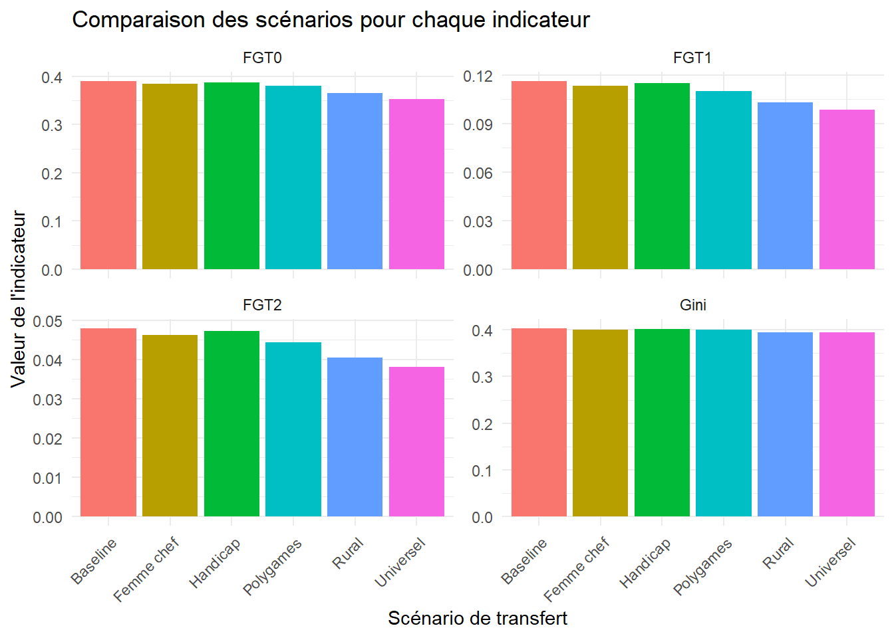

📖 Chapitre II. Applications pratiques
0. Consigne
Projet :
Évaluation des politiques de transfert monétaire sur la pauvreté et les inégalités au Burkina Faso, à l’aide des données de l’EHCVM 2021.
Scénarios simulés :
- Scénario 1 : Transfert universel — Tous les ménages reçoivent une allocation annuelle de 100 000 CFA.
- Scénario 2 : Transfert universel rural — Seuls les ménages ruraux reçoivent l’allocation.
- Scénario 3 : Chef de ménage femme — Transfert ciblé aux ménages dirigés par une femme.
- Scénario 4 : Chef polygame — Transfert aux ménages dont le chef est polygame.
- Scénario 5 : Handicap — Transfert aux ménages comprenant au moins un membre en situation de handicap.
1. Chargement et exploration des données EHCVM 2021
Objectif
Utiliser le package gtsummary pour explorer, résumer et mieux comprendre les variables clés.
Variables importantes
| Variable | Description |
|---|---|
pcexp |
Dépense par tête (proxy du revenu) |
hhsize |
Taille du ménage |
milieu |
Milieu de résidence (urbain ou rural) |
hmstat |
Statut matrimonial du chef de ménage |
hgender |
Sexe du chef de ménage |
zref |
Seuil de pauvreté national |
hhandig |
S’il y a des handicapés dans le ménage |
3. Exploration préliminaire
Aperçu des premières lignes
## # A tibble: 6 x 8
## hhid milieu pcexp hmstat hhsize hhandig hgender zref
## <dbl> <chr> <dbl> <chr> <dbl> <chr> <chr> <dbl>
## 1 586005 Rural 330982. Marié(e) monogame 8 Non Masculin 247806.
## 2 586028 Rural 368773. Marié(e) polygame 33 Non Masculin 247806.
## 3 586043 Rural 217423. Marié(e) monogame 4 Non Masculin 247806.
## 4 586044 Rural 88294. Marié(e) monogame 12 Non Masculin 247806.
## 5 586052 Rural 85029. Marié(e) polygame 12 Non Masculin 247806.
## 6 586082 Rural 175191. Marié(e) monogame 6 Non Masculin 247806.## tibble [7,176 x 8] (S3: tbl_df/tbl/data.frame)
## $ hhid : num [1:7176] 586005 586028 586043 586044 586052 ...
## $ milieu : chr [1:7176] "Rural" "Rural" "Rural" "Rural" ...
## $ pcexp : num [1:7176] 330982 368773 217423 88294 85029 ...
## $ hmstat : chr [1:7176] "Marié(e) monogame" "Marié(e) polygame" "Marié(e) monogame" "Marié(e) monogame" ...
## $ hhsize : num [1:7176] 8 33 4 12 12 6 9 9 9 15 ...
## $ hhandig: chr [1:7176] "Non" "Non" "Non" "Non" ...
## $ hgender: chr [1:7176] "Masculin" "Masculin" "Masculin" "Masculin" ...
## $ zref : num [1:7176] 247806 247806 247806 247806 247806 ...4. CORRECTION
Évaluation des politiques de transfert monétaire sur la pauvreté et les inégalités au Burkina Faso
Introduction
Les programmes de transfert monétaire constituent une approche de protection sociale de pour lutter contre la pauvreté.
Méthodologie
1. Préparation des données
Commençons par charger les bibliothèques nécessaires et les données de l’EHCVM 2021.
2. Exploration des données Avec gtsummary
Avant de procéder aux simulations, examinons les caractéristiques de notre jeu de données.
ON VA METTRE DES TABLEAUX POUR CHAQUE VARIABLE. APRES ON VA CONCATENER LES TABLEAUX AVEC tbl_stack
| Characteristic | N = 7,176 |
|---|---|
| Dépenses par tête (FCFA), Mean (Max,Min,SD) | 475,346.20 (7,508,059.00,41,297.69,449,755.89) |
| Taille du ménage, Mean (Max,Min,SD) | 6.44 (43.00,1.00,3.99) |
| Statut matrimonial du chef, n (%) | |
| Célibataire | 349 (4.9%) |
| Divorcé(e) | 50 (0.7%) |
| Marié(e) monogame | 4,352 (61%) |
| Marié(e) polygame | 1,572 (22%) |
| Séparé(e) | 86 (1.2%) |
| Union libre | 199 (2.8%) |
| Veuf(ve) | 568 (7.9%) |
| Genre du chef, n (%) | |
| Féminin | 1,075 (15%) |
| Masculin | 6,101 (85%) |
| Milieu de résidence, n (%) | |
| Rural | 3,838 (53%) |
| Urbain | 3,338 (47%) |
| Présence de handicapés, n (%) | |
| Non | 6,763 (94%) |
| Oui | 413 (5.8%) |
4. Comparaison des différents scénarios
## Scenario FGT0 FGT1 FGT2 Gini Cout Efficacite
## 1 Scénario 0 : sans transfert 0.3899208 0.11606503 0.04788731 0.4030270 0 NA
## 2 Universel 0.3536606 0.09854293 0.03816320 0.3946771 717600000 0.2795121
## 3 Rural 0.3648742 0.10289152 0.04043923 0.3940861 383800000 0.3929103
## 4 Femme chef 0.3848552 0.11334728 0.04627177 0.4011870 107500000 0.2893988
## 5 Polygames 0.3803957 0.11016572 0.04440902 0.3998966 157200000 0.4295813
## 6 Handicap 0.3875395 0.11498352 0.04730807 0.4023514 41300000 0.2997606
Conclusion
Le ciblage universel est le plus efficace en termes d’impact brut avec une forte réduction de la pauvreté FGT0 : 0.354 (vs 0.390), FGT1 : 0.099, FGT2 : 0.038, Gini : 0.395,mais cela se fait au prix du coût le plus élevé : 717 600 000 FCFA, pour une efficacité modérée (27.95 %).
Le ciblage polygame est le plus efficient (Efficacité : 42.96 %, coût : 157 200 000 FCFA), avec une réduction notable des indices (FGT1 : 0.110 vs 0.116, FGT2 : 0.044).
Le ciblage rural constitue une stratégie équilibrée avec un impact significatif (FGT1 : 0.103), un coût raisonnable : 383 800 000 FCFA et bonne efficacité : 39.29 %.
Des scénarios combinés comme rural + femme chef ou polygame + présence d’handicapés pourraient permettre une réduction significative de la pauvreté à moindre coût, tout en assurant une meilleure ciblage des plus vulnérables.
Annexe : Définitions et formules
Indices FGT (Foster-Greer-Thorbecke) :
- FGT0 (Incidence) : Proportion de la population vivant sous le seuil de pauvreté
\[FGT_0 = \frac{1}{N} \sum_{i=1}^{N} \mathbf{1}(pcexp_i < z)\] - FGT1 (Profondeur) : Écart moyen normalisé entre le revenu des pauvres et le seuil de pauvreté
\[FGT_1 = \frac{1}{N} \sum_{i=1}^{N} \left( \frac{z - pcexp_i}{z} \right) \mathbf{1}(pcexp_i < z)\]
- FGT2 (Sévérité) : Moyenne des carrés des écarts normalisés, donnant plus de poids aux plus pauvres
\[FGT_2 = \frac{1}{N} \sum_{i=1}^{N} \left( \frac{z - pcexp_i}{z} \right)^2 \mathbf{1}(pcexp_i < z)\]
Coefficient de Gini : Mesure de l’inégalité de la distribution des revenus au sein d’une hhsizeulation (0 = égalité parfaite, 1 = inégalité maximale)
\[G = \frac{\sum_{i=1}^{N} \sum_{j=1}^{N} |pcexp_i - pcexp_j|}{2 N^2 \bar{pcexp}}\]
où :
\(N\) est la population totale,
\(pcexp_i\) est la dépense de consommation par tête du ménage \(\( i \)\),
\(z\) est le seuil de pauvreté,
\(\mathbf{1}(pcexp_i < z)\) est une fonction indicatrice qui vaut 1 si \(pcexp_i < z\), sinon 0,
\(\bar{pcexp}\) est la moyenne des dépenses de consommation par tête.
Efficacité du transfert : Ratio entre la réduction du gap de pauvreté et le coût total du programme de transfert